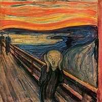

import Bilza from "../00lib/Bilza_0_0_14.js";
// import Bilza from "../../src/Bilza.js";
let bil = new Bilza("bilza",60,800,400);
let img01 = getImage(0,0,"screamImage");
let img02 = getImage(50,0,"screamImage");
let img03 = getImage(0,50,"screamImage");
let img04 = getImage(50,50,"screamImage");
function getImage(x,y,id){
let img = bil.add.Image(0,300,id,x,y);
img.d.dynWidthPercent = 50;
img.d.dynHeightPercent = 50;
img.d.xAlignment = img.xAlignmentOptions.Left;
img.d.yAlignment = img.yAlignmentOptions.Top;
img.d.useDynResize = true;
return img;
}
//////////////////////////////////
bil.draw();
///////////////////////////////
let increase = true;
let inter = setInterval(function(){
if ( (increase == true) && (img01.d.dynWidthPercent > 50) ){
increase = false;
}
if ( (increase == false) && (img01.d.dynWidthPercent < 1) ){
increase = true;
}
///////////////////
if (increase == true){
img01.d.dynWidthPercent += 1;
img01.d.dynHeightPercent += 1;
img02.d.dynWidthPercent += 1;
img02.d.dynHeightPercent += 1;
img03.d.dynWidthPercent += 1;
img03.d.dynHeightPercent += 1;
img04.d.dynWidthPercent += 1;
img04.d.dynHeightPercent += 1;
}else {
img01.d.dynWidthPercent -= 1;
img01.d.dynHeightPercent -= 1;
img02.d.dynWidthPercent -= 1;
img02.d.dynHeightPercent -= 1;
img03.d.dynWidthPercent -= 1;
img03.d.dynHeightPercent -= 1;
img04.d.dynWidthPercent -= 1;
img04.d.dynHeightPercent -= 1;
}
bil.draw();
},50);